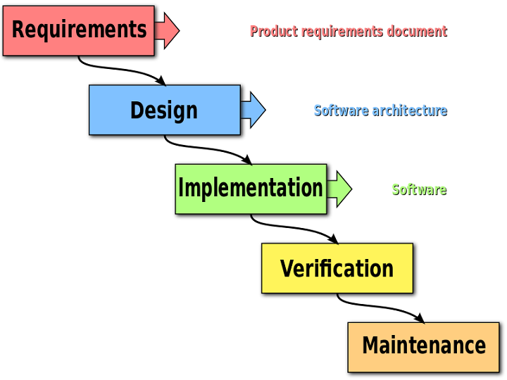
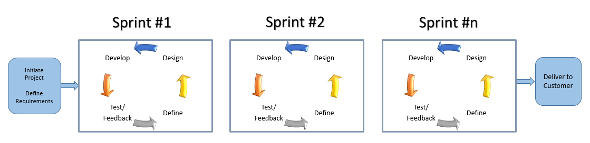
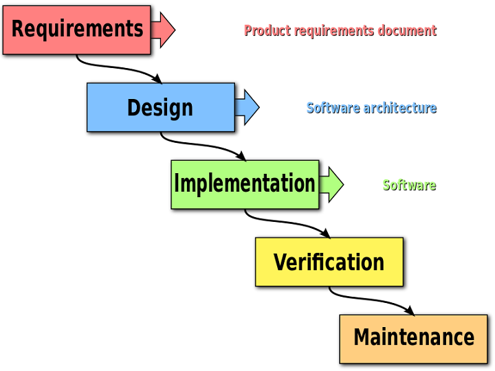
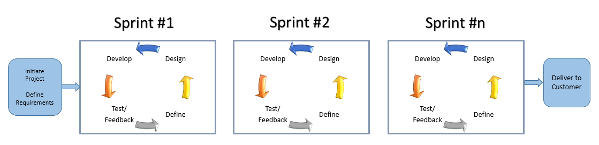

What is the Web Development Process?
Web Development Process
SDLC and Project Management
SDLC info
Traditional Waterfall SDLC Methodology (PNG image)

Source: Wikipedia
Agile Methodology (GIF image)

Web Development Process
SDLC info

Source: Wikipedia
